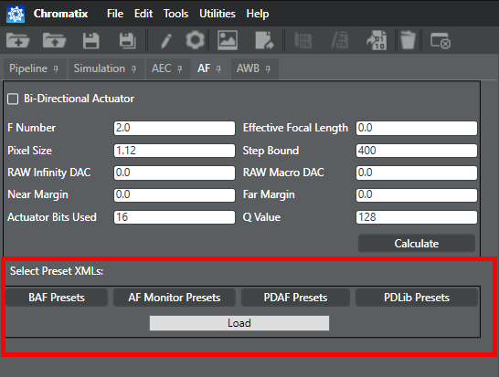

| Initial tuning | |
$BUILDROOT\LINUX\android\vendor\qcom\proprietary\chi-cdk\cdk\chromatix\presets\stats\af

The presets provide you with a solid baseline for AF tuning. After you evaluate the AF performance, you can load a different preset if you want to modify the behavior in a specific area (e.g., BAF, PDAF, etc.) that did not meet your performance criteria. We recommend evaluating other presets for the problem area before manually adjusting the AF parameters.